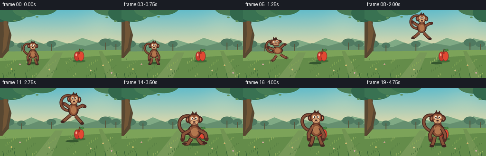
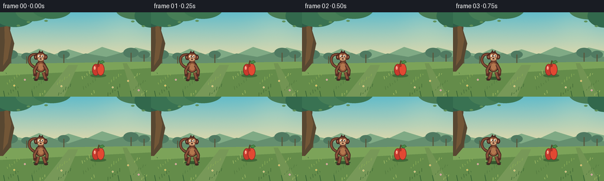

CODING AGENTS AS PIXEL WORLD MODELS
traex/GPT-5.6-Sol · dynamic_spatial_relationship_0056
点击播放 · 原生 RGB 像素
逐轮保存的候选
回放视频、检查图与代码变化。
每份候选均可单独播放。实际图片检查记录在下方工具轨迹中。
候选 01播放与检查图
点击播放 · 原生 RGB 像素


展开代码变化
--- 上一保存版本
+++ 本次保存版本
@@ -0,0 +1,216 @@
+from pathlib import Path
+import math
+import numpy as np
+from PIL import Image, ImageDraw, ImageFilter
+import artifact_io
+
+W,H,N = 256,144,20
+SS=4
+rng=np.random.default_rng(56)
+
+def C(p): return tuple(int(v*SS) for v in p)
+def poly(d, pts, fill, outline=None, width=1):
+ q=[C(p) for p in pts]; d.polygon(q,fill=fill)
+ if outline: d.line(q+[q[0]],fill=outline,width=width*SS,joint='curve')
+def ell(d, box, fill, outline=None, width=1):
+ d.ellipse(C(box),fill=fill,outline=outline,width=width*SS)
+def line(d, pts, fill, width, joint='curve'):
+ d.line([C(p) for p in pts],fill=fill,width=max(1,int(width*SS)),joint=joint)
+def bezier(p0,p1,p2,p3,n=25):
+ out=[]
+ for t in np.linspace(0,1,n):
+ u=1-t
+ out.append((u**3*p0[0]+3*u*u*t*p1[0]+3*u*t*t*p2[0]+t**3*p3[0],u**3*p0[1]+3*u*u*t*p1[1]+3*u*t*t*p2[1]+t**3*p3[1]))
+ return out
+
+def background(frame):
+ # painterly dawn-sky gradient, static except tiny light shimmer
+ hh,ww=H*SS,W*SS
+ y=np.arange(hh)[:,None]/SS
+ top=np.array([100,186,200.]); bot=np.array([245,221,165.])
+ a=np.clip(y/92,0,1)[...,None]
+ arr=np.broadcast_to((top*(1-a)+bot*a),(hh,ww,3)).copy()
+ xx=np.arange(ww)[None,:]/SS
+ glow=np.exp(-((xx-211)**2+(y-25)**2)/(2*29**2))[...,None]
+ arr=arr*(1-.13*glow)+np.array([255,240,181])*0.13*glow
+ # subtle film texture
+ noise=rng.normal(0,0.65,(hh,ww,1))
+ arr=np.clip(arr+noise,0,255).astype(np.uint8)
+ im=Image.fromarray(arr,'RGB'); d=ImageDraw.Draw(im)
+ # far hazy orchard and rolling hills
+ poly(d,[(0,75),(20,67),(44,72),(66,62),(91,72),(116,63),(145,72),(173,59),(205,69),(230,60),(256,66),(256,102),(0,102)],'#80a985')
+ poly(d,[(0,82),(28,73),(58,79),(84,69),(115,80),(145,70),(180,76),(213,67),(256,76),(256,108),(0,108)],'#668f70')
+ # distant tree blobs
+ for x0,y0,r in [(18,72,12),(45,75,9),(108,72,10),(222,69,13),(244,72,10)]:
+ ell(d,(x0-r,y0-r*.65,x0+r,y0+r*.65),'#527b63')
+ line(d,[(x0,y0),(x0,y0+15)],'#5b5c42',2)
+ # ground bands
+ poly(d,[(0,88),(256,84),(256,144),(0,144)],'#7da25b')
+ poly(d,[(0,108),(256,95),(256,144),(0,144)],'#658c4c')
+ # perspective soft tracks
+ poly(d,[(116,90),(132,90),(108,144),(74,144)],'#78985a')
+ poly(d,[(208,87),(215,87),(247,144),(225,144)],'#739455')
+ # foreground grass strokes
+ for i in range(72):
+ x=(i*43+11)%256; yy=105+((i*29)%39); ht=2+(i%5)
+ col=['#486f3d','#577c43','#88a957','#a2ba65'][i%4]
+ line(d,[(x,yy),(x+(i%3)-1,yy-ht)],col,1)
+ # scattered small flowers
+ for x0,y0,col in [(24,125,'#f6df79'),(42,115,'#f2b8c2'),(104,126,'#eee29b'),(217,117,'#f3d889'),(235,133,'#f0b8c8'),(191,128,'#eee0a4')]:
+ ell(d,(x0-1.5,y0-1.5,x0+1.5,y0+1.5),col)
+ ell(d,(x0-.5,y0-.5,x0+.5,y0+.5),'#9f7440')
+ # framing tree left, behind subjects
+ poly(d,[(-4,0),(20,0),(17,31),(24,53),(17,87),(5,101),(-4,101)],'#5a4934')
+ poly(d,[(7,0),(16,0),(14,24),(19,46),(13,79),(5,91),(8,52)],'#73583a')
+ # canopy clusters
+ for x0,y0,rx,ry,c in [(-2,6,31,19,'#315f4b'),(25,4,35,21,'#3c7354'),(56,-3,30,18,'#487e58'),(88,-7,34,18,'#3f7652'),(231,-5,35,17,'#4a7c56'),(258,6,30,20,'#35694e')]:
+ ell(d,(x0-rx,y0-ry,x0+rx,y0+ry),c)
+ # small hanging leaves
+ for x0,y0 in [(31,22),(48,16),(78,14),(225,15),(243,23)]:
+ ell(d,(x0-3,y0-1,x0+3,y0+2),'#62915c')
+ return im
+
+def apple_layer(im, frame):
+ d=ImageDraw.Draw(im)
+ # fixed apple is the spatial anchor
+ # shadow makes it sit behind final monkey
+ ell(d,(153,105,180,111),'#456b3b')
+ # apple silhouette, bright and unmistakable
+ ell(d,(156,88,168.5,108),'#c83d30', '#822f2a',1)
+ ell(d,(164,87,177,108),'#df4a35', '#822f2a',1)
+ # top cleft
+ poly(d,[(163,90),(166,87),(169,90),(168,93),(164,93)],'#a83229')
+ line(d,[(166,89),(168,82)],'#5a422a',2)
+ poly(d,[(168,84),(174,82),(177,85),(171,88)],'#4e8a49','#37683a',1)
+ # glossy highlight
+ ell(d,(159,92,162,98),'#f6a18a')
+ ell(d,(160,92,161,94),'#ffe0c5')
+
+def transform_point(x,y,cx,cy,s,ang=0):
+ ca,sa=math.cos(ang),math.sin(ang)
+ return (cx+s*(x*ca-y*sa), cy+s*(x*sa+y*ca))
+
+def monkey_pose(i):
+ # readable story beats: hold-left, crouch, airborne arc, foreground landing
+ if i<=3:
+ return 69+0.5*math.sin(i*1.5),108+0.5*math.sin(i*1.7),.82,0.0,'stand'
+ if i==4: return 70,112,.84,-.08,'crouch'
+ # motion path, intentionally rises high before moving in depth toward apple
+ table={
+ 5:(76,101,.86,-.22),6:(88,82,.88,-.16),7:(103,66,.91,-.08),
+ 8:(120,55,.95,.03),9:(136,52,.99,.08),10:(147,56,1.04,.11),
+ 11:(153,66,1.09,.08),12:(155,80,1.14,.03),13:(155,96,1.20,-.03),
+ 14:(154,116,1.27,-.02)}
+ if i in table: return (*table[i],'jump' if i<14 else 'land')
+ settle=[(154,113,1.25),(154,111,1.23),(154,112,1.23),(154,112,1.23),(154,112,1.23)]
+ x,y,s=settle[i-15]
+ return x,y,s,0,'front'
+
+def draw_monkey(im,i):
+ d=ImageDraw.Draw(im)
+ cx,cy,s,ang,phase=monkey_pose(i)
+ P=lambda x,y: transform_point(x,y,cx,cy,s,ang)
+ def E(box,fill,outline=None,w=1):
+ # ellipses are axis-aligned, acceptable with small body tilt
+ x1,y1=P(box[0],box[1]); x2,y2=P(box[2],box[3])
+ ell(d,(min(x1,x2),min(y1,y2),max(x1,x2),max(y1,y2)),fill,outline,w)
+ # ground contact / moving shadow: broader and stronger as monkey comes forward
+ if phase in ('stand','crouch'):
+ shx,shy=cx,112
+ elif phase in ('land','front'):
+ shx,shy=cx,119
+ else:
+ shx,shy=152,112
+ air=max(0,105-cy)
+ rw=(13+9*(s-0.8))*(1-.003*air)
+ ell(d,(shx-rw,shy-2,shx+rw,shy+3),(55,88,49))
+
+ # Tail behind body; expressive S curl remains highly monkey-specific
+ if phase in ('jump','land'):
+ pts=bezier(P(-8,-16),P(-29,-15),P(-30,-43),P(-13,-45),18)+bezier(P(-13,-45),P(1,-46),P(0,-33),P(-8,-34),12)[1:]
+ else:
+ pts=bezier(P(-8,-16),P(-28,-20),P(-28,-43),P(-14,-44),18)+bezier(P(-14,-44),P(0,-46),P(3,-35),P(-6,-34),12)[1:]
+ line(d,pts,'#4b2c24',6*s)
+ line(d,pts,'#83513a',3.3*s)
+
+ # limb endpoints depend on jump phase
+ if phase=='crouch':
+ arms=[((-6,-20),(-14,-10),(-13,0)),((7,-20),(14,-11),(13,-1))]
+ legs=[((-5,-7),(-11,1),(-16,2)),((5,-7),(10,1),(16,1))]
+ elif phase=='jump':
+ t=(i-5)/9
+ # arms upward during ascent, out during descent
+ ay=-31+15*max(0,t-.48)
+ arms=[((-7,-22),(-17,-28),(-21,ay)),((7,-22),(17,-28),(22,ay+2))]
+ legs=[((-5,-7),(-13,1),(-19,4+4*t)),((5,-7),(13,1),(19,5+3*t))]
+ elif phase=='land':
+ arms=[((-7,-21),(-18,-15),(-20,-5)),((7,-21),(18,-15),(20,-5))]
+ legs=[((-5,-7),(-11,1),(-17,1)),((5,-7),(11,1),(17,1))]
+ else:
+ arms=[((-7,-22),(-13,-11),(-12,-1)),((7,-22),(13,-11),(12,-1))]
+ # tiny natural alternating stance only in opening
+ q=1.2*math.sin(i*1.2) if i<=3 else 0
+ legs=[((-5,-7),(-7,2),(-10+q,9)),((5,-7),(8,2),(11-q,9))]
+ # back legs then body
+ for a,b,c in legs:
+ line(d,[P(*a),P(*b),P(*c)],'#4b2b24',7*s)
+ line(d,[P(*a),P(*b),P(*c)],'#89543c',4.4*s)
+ E((c[0]-4,c[1]-2,c[0]+4,c[1]+2),'#452b27')
+ # torso outer and golden chest
+ E((-11,-30,11,-7),'#563126','#3a241f',1)
+ E((-8,-28,8,-8),'#8b5439')
+ E((-5,-25,6,-11),'#b27850')
+ # arms layered in front
+ for a,b,c in arms:
+ line(d,[P(*a),P(*b),P(*c)],'#4a2b24',7*s)
+ line(d,[P(*a),P(*b),P(*c)],'#89543c',4.2*s)
+ E((c[0]-3,c[1]-3,c[0]+3,c[1]+3),'#563029')
+ # neck tuft
+ poly(d,[P(-6,-29),P(-3,-35),P(1,-31),P(5,-35),P(7,-28)],'#70412f')
+ # ears behind head
+ E((-14,-44,-5,-33),'#643629','#3a211d',1); E((5,-44,14,-33),'#643629','#3a211d',1)
+ E((-11.5,-41.5,-7,-36),'#d08b68'); E((7,-41.5,11.5,-36),'#d08b68')
+ # head cap and cheeks
+ E((-10,-49,10,-30),'#603429','#38211d',1)
+ E((-8.8,-47,8.8,-31),'#8a5138')
+ # brows/face mask
+ E((-7,-44,-.4,-36),'#d19a70')
+ E((.4,-44,7,-36),'#d19a70')
+ # muzzle
+ E((-6.8,-39,6.8,-29.5),'#d9a77a','#704738',1)
+ # eyes white and pupils; looking toward destination during opening, camera after landing
+ E((-5.2,-42.5,-1.2,-38.4),'#f3ead7')
+ E((1.2,-42.5,5.2,-38.4),'#f3ead7')
+ look=0.9 if i<8 else 0
+ E((-3.8+look,-41.6,-1.9+look,-39.1),'#201b19')
+ E((1.9+look,-41.6,3.8+look,-39.1),'#201b19')
+ # little eye catchlights
+ E((-3.25+look,-41.25,-2.7+look,-40.7),'#ffffff')
+ E((2.45+look,-41.25,3+look,-40.7),'#ffffff')
+ # nose and warm smile
+ E((-2.1,-35.8,2.1,-33.5),'#4a2927')
+ line(d,[P(-2.8,-32.7),P(0,-31.5),P(3,-32.8)],'#6f362c',.8*s)
+ # forehead tuft
+ poly(d,[P(-5,-47),P(-2,-53),P(0,-48),P(4,-52),P(5,-46)],'#4b2a23')
+ # highlights define volume
+ line(d,[P(-6,-26),P(-4,-14)],'#b27a55',1.2*s)
+
+
+def render(i):
+ im=background(i)
+ # atmospheric foreground leaves on far right do not obscure action
+ apple_layer(im,i)
+ draw_monkey(im,i)
+ d=ImageDraw.Draw(im)
+ # a few foreground blades overlap feet for depth
+ for x in [8,32,56,202,223,247]:
+ line(d,[(x,144),(x-2,134)],'#355f37',1)
+ im=im.resize((W,H),Image.Resampling.LANCZOS)
+ # restrained cinematic contrast
+ a=np.asarray(im).astype(np.float32)
+ a=(a-128)*1.035+128
+ return np.clip(a,0,255).astype(np.uint8)
+
+frames=np.stack([render(i) for i in range(N)])
+artifact_io.save(frames,Path(__file__).resolve().parent)
+print(frames.shape,frames.dtype)
可观测工具轨迹
实际执行的命令与返回图片。
命令 1exit 0
/bin/bash -lc "ls -la && printf '\\n--- prompt.txt ---\\n' && cat prompt.txt && printf '\\n--- GENERATION_RULES.md ---\\n' && cat GENERATION_RULES.md && printf '\\n--- task_spec.json ---\\n' && cat task_spec.json"
命令 2exit 0
/bin/bash -lc "sed -n '1,240p' artifact_io.py"
命令 3exit 0
/bin/bash -lc "cat > generate.py <<'PY'
from pathlib import Path
import math
import numpy as np
from PIL import Image, ImageDraw, ImageFilter
import artifact_io
W,H,N = 256,144,20
SS=4
rng=np.random.default_rng(56)
def C(p): return tuple(int(v*SS) for v in p)
def poly(d, pts, fill, outline=None, width=1):
q=[C(p) for p in pts]; d.polygon(q,fill=fill)
if outline: d.line(q+[q[0]],fill=outline,width=width*SS,joint='curve')
def ell(d, box, fill, outline=None, width=1):
d.ellipse(C(box),fill=fill,outline=outline,width=width*SS)
def line(d, pts, fill, width, joint='curve'):
d.line([C(p) for p in pts],fill=fill,width=max(1,int(width*SS)),joint=joint)
def bezier(p0,p1,p2,p3,n=25):
out=[]
for t in np.linspace(0,1,n):
u=1-t
out.append((u**3*p0[0]+3*u*u*t*p1[0]+3*u*t*t*p2[0]+t**3*p3[0],u**3*p0[1]+3*u*u*t*p1[1]+3*u*t*t*p2[1]+t**3*p3[1]))
return out
def background(frame):
# painterly dawn-sky gradient, static except tiny light shimmer
hh,ww=H*SS,W*SS
y=np.arange(hh)[:,None]/SS
top=np.array([100,186,200.]); bot=np.array([245,221,165.])
a=np.clip(y/92,0,1)[...,None]
arr=np.broadcast_to((top*(1-a)+bot*a),(hh,ww,3)).copy()
xx=np.arange(ww)[None,:]/SS
glow=np.exp(-((xx-211)**2+(y-25)**2)/(2*29**2))[...,None]
arr=arr*(1-.13*glow)+np.array([255,240,181])*0.13*glow
# subtle film texture
noise=rng.normal(0,0.65,(hh,ww,1))
arr=np.clip(arr+noise,0,255).astype(np.uint8)
im=Image.fromarray(arr,'RGB'); d=ImageDraw.Draw(im)
# far hazy orchard and rolling hills
poly(d,[(0,75),(20,67),(44,72),(66,62),(91,72),(116,63),(145,72),(173,59),(205,69),(230,60),(256,66),(256,102),(0,102)],'#80a985')
poly(d,[(0,82),(28,73),(58,79),(84,69),(115,80),(145,70),(180,76),(213,67),(256,76),(256,108),(0,108)],'#668f70')
# distant tree blobs
for x0,y0,r in [(18,72,12),(45,75,9),(108,72,10),(222,69,13),(244,72,10)]:
ell(d,(x0-r,y0-r*.65,x0+r,y0+r*.65),'#527b63')
line(d,[(x0,y0),(x0,y0+15)],'#5b5c42',2)
# ground bands
poly(d,[(0,88),(256,84),(256,144),(0,144)],'#7da25b')
poly(d,[(0,108),(256,95),(256,144),(0,144)],'#658c4c')
# perspective soft tracks
poly(d,[(116,90),(132,90),(108,144),(74,144)],'#78985a')
poly(d,[(208,87),(215,87),(247,144),(225,144)],'#739455')
# foreground grass strokes
for i in range(72):
x=(i*43+11)%256; yy=105+((i*29)%39); ht=2+(i%5)
col=['#486f3d','#577c43','#88a957','#a2ba65'][i%4]
line(d,[(x,yy),(x+(i%3)-1,yy-ht)],col,1)
# scattered small flowers
for x0,y0,col in [(24,125,'#f6df79'),(42,115,'#f2b8c2'),(104,126,'#eee29b'),(217,117,'#f3d889'),(235,133,'#f0b8c8'),(191,128,'#eee0a4')]:
ell(d,(x0-1.5,y0-1.5,x0+1.5,y0+1.5),col)
ell(d,(x0-.5,y0-.5,x0+.5,y0+.5),'#9f7440')
# framing tree left, behind subjects
poly(d,[(-4,0),(20,0),(17,31),(24,53),(17,87),(5,101),(-4,101)],'#5a4934')
poly(d,[(7,0),(16,0),(14,24),(19,46),(13,79),(5,91),(8,52)],'#73583a')
# canopy clusters
for x0,y0,rx,ry,c in [(-2,6,31,19,'#315f4b'),(25,4,35,21,'#3c7354'),(56,-3,30,18,'#487e58'),(88,-7,34,18,'#3f7652'),(231,-5,35,17,'#4a7c56'),(258,6,30,20,'#35694e')]:
ell(d,(x0-rx,y0-ry,x0+rx,y0+ry),c)
# small hanging leaves
for x0,y0 in [(31,22),(48,16),(78,14),(225,15),(243,23)]:
ell(d,(x0-3,y0-1,x0+3,y0+2),'#62915c')
return im
def apple_layer(im, frame):
d=ImageDraw.Draw(im)
# fixed apple is the spatial anchor
# shadow makes it sit behind final monkey
ell(d,(153,105,180,111),'#456b3b')
# apple silhouette, bright and unmistakable
ell(d,(156,88,168.5,108),'#c83d30', '#822f2a',1)
ell(d,(164,87,177,108),'#df4a35', '#822f2a',1)
# top cleft
poly(d,[(163,90),(166,87),(169,90),(168,93),(164,93)],'#a83229')
line(d,[(166,89),(168,82)],'#5a422a',2)
poly(d,[(168,84),(174,82),(177,85),(171,88)],'#4e8a49','#37683a',1)
# glossy highlight
ell(d,(159,92,162,98),'#f6a18a')
ell(d,(160,92,161,94),'#ffe0c5')
def transform_point(x,y,cx,cy,s,ang=0):
ca,sa=math.cos(ang),math.sin(ang)
return (cx+s*(x*ca-y*sa), cy+s*(x*sa+y*ca))
def monkey_pose(i):
# readable story beats: hold-left, crouch, airborne arc, foreground landing
if i<=3:
return 69+0.5*math.sin(i*1.5),108+0.5*math.sin(i*1.7),.82,0.0,'stand'
if i==4: return 70,112,.84,-.08,'crouch'
# motion path, intentionally rises high before moving in depth toward apple
table={
5:(76,101,.86,-.22),6:(88,82,.88,-.16),7:(103,66,.91,-.08),
8:(120,55,.95,.03),9:(136,52,.99,.08),10:(147,56,1.04,.11),
11:(153,66,1.09,.08),12:(155,80,1.14,.03),13:(155,96,1.20,-.03),
14:(154,116,1.27,-.02)}
if i in table: return (*table[i],'jump' if i<14 else 'land')
settle=[(154,113,1.25),(154,111,1.23),(154,112,1.23),(154,112,1.23),(154,112,1.23)]
x,y,s=settle[i-15]
return x,y,s,0,'front'
def draw_monkey(im,i):
d=ImageDraw.Draw(im)
cx,cy,s,ang,phase=monkey_pose(i)
P=lambda x,y: transform_point(x,y,cx,cy,s,ang)
def E(box,fill,outline=None,w=1):
# ellipses are axis-aligned, acceptable with small body tilt
x1,y1=P(box[0],box[1]); x2,y2=P(box[2],box[3])
ell(d,(min(x1,x2),min(y1,y2),max(x1,x2),max(y1,y2)),fill,outline,w)
# ground contact / moving shadow: broader and stronger as monkey comes forward
if phase in ('stand','crouch'):
shx,shy=cx,112
elif phase in ('land','front'):
shx,shy=cx,119
else:
shx,shy=152,112
air=max(0,105-cy)
rw=(13+9*(s-0.8))*(1-.003*air)
ell(d,(shx-rw,shy-2,shx+rw,shy+3),(55,88,49))
# Tail behind body; expressive S curl remains highly monkey-specific
if phase in ('jump','land'):
pts=bezier(P(-8,-16),P(-29,-15),P(-30,-43),P(-13,-45),18)+bezier(P(-13,-45),P(1,-46),P(0,-33),P(-8,-34),12)[1:]
else:
pts=bezier(P(-8,-16),P(-28,-20),P(-28,-43),P(-14,-44),18)+bezier(P(-14,-44),P(0,-46),P(3,-35),P(-6,-34),12)[1:]
line(d,pts,'#4b2c24',6*s)
line(d,pts,'#83513a',3.3*s)
# limb endpoints depend on jump phase
if phase=='crouch':
arms=[((-6,-20),(-14,-10),(-13,0)),((7,-20),(14,-11),(13,-1))]
legs=[((-5,-7),(-11,1),(-16,2)),((5,-7),(10,1),(16,1))]
elif phase=='jump':
t=(i-5)/9
# arms upward during ascent, out during descent
ay=-31+15*max(0,t-.48)
arms=[((-7,-22),(-17,-28),(-21,ay)),((7,-22),(17,-28),(22,ay+2))]
legs=[((-5,-7),(-13,1),(-19,4+4*t)),((5,-7),(13,1),(19,5+3*t))]
elif phase=='land':
arms=[((-7,-21),(-18,-15),(-20,-5)),((7,-21),(18,-15),(20,-5))]
legs=[((-5,-7),(-11,1),(-17,1)),((5,-7),(11,1),(17,1))]
else:
arms=[((-7,-22),(-13,-11),(-12,-1)),((7,-22),(13,-11),(12,-1))]
# tiny natural alternating stance only in opening
q=1.2*math.sin(i*1.2) if i<=3 else 0
legs=[((-5,-7),(-7,2),(-10+q,9)),((5,-7),(8,2),(11-q,9))]
# back legs then body
for a,b,c in legs:
line(d,[P(*a),P(*b),P(*c)],'#4b2b24',7*s)
line(d,[P(*a),P(*b),P(*c)],'#89543c',4.4*s)
E((c[0]-4,c[1]-2,c[0]+4,c[1]+2),'#452b27')
# torso outer and golden chest
E((-11,-30,11,-7),'#563126','#3a241f',1)
E((-8,-28,8,-8),'#8b5439')
E((-5,-25,6,-11),'#b27850')
# arms layered in front
for a,b,c in arms:
line(d,[P(*a),P(*b),P(*c)],'#4a2b24',7*s)
line(d,[P(*a),P(*b),P(*c)],'#89543c',4.2*s)
E((c[0]-3,c[1]-3,c[0]+3,c[1]+3),'#563029')
# neck tuft
poly(d,[P(-6,-29),P(-3,-35),P(1,-31),P(5,-35),P(7,-28)],'#70412f')
# ears behind head
E((-14,-44,-5,-33),'#643629','#3a211d',1); E((5,-44,14,-33),'#643629','#3a211d',1)
E((-11.5,-41.5,-7,-36),'#d08b68'); E((7,-41.5,11.5,-36),'#d08b68')
# head cap and cheeks
E((-10,-49,10,-30),'#603429','#38211d',1)
E((-8.8,-47,8.8,-31),'#8a5138')
# brows/face mask
E((-7,-44,-.4,-36),'#d19a70')
E((.4,-44,7,-36),'#d19a70')
# muzzle
E((-6.8,-39,6.8,-29.5),'#d9a77a','#704738',1)
# eyes white and pupils; looking toward destination during opening, camera after landing
E((-5.2,-42.5,-1.2,-38.4),'#f3ead7')
E((1.2,-42.5,5.2,-38.4),'#f3ead7')
look=0.9 if i<8 else 0
E((-3.8+look,-41.6,-1.9+look,-39.1),'#201b19')
E((1.9+look,-41.6,3.8+look,-39.1),'#201b19')
# little eye catchlights
E((-3.25+look,-41.25,-2.7+look,-40.7),'#ffffff')
E((2.45+look,-41.25,3+look,-40.7),'#ffffff')
# nose and warm smile
E((-2.1,-35.8,2.1,-33.5),'#4a2927')
line(d,[P(-2.8,-32.7),P(0,-31.5),P(3,-32.8)],'#6f362c',.8*s)
# forehead tuft
poly(d,[P(-5,-47),P(-2,-53),P(0,-48),P(4,-52),P(5,-46)],'#4b2a23')
# highlights define volume
line(d,[P(-6,-26),P(-4,-14)],'#b27a55',1.2*s)
def render(i):
im=background(i)
# atmospheric foreground leaves on far right do not obscure action
apple_layer(im,i)
draw_monkey(im,i)
d=ImageDraw.Draw(im)
# a few foreground blades overlap feet for depth
for x in [8,32,56,202,223,247]:
line(d,[(x,144),(x-2,134)],'#355f37',1)
im=im.resize((W,H),Image.Resampling.LANCZOS)
# restrained cinematic contrast
a=np.asarray(im).astype(np.float32)
a=(a-128)*1.035+128
return np.clip(a,0,255).astype(np.uint8)
frames=np.stack([render(i) for i in range(N)])
artifact_io.save(frames,Path(__file__).resolve().parent)
print(frames.shape,frames.dtype)
PY
python generate.py"命令 4exit 0
/bin/bash -lc "python - <<'PY'
import numpy as np
z=np.load('pixels.npz')['pixels']
print('pixels',z.shape,z.dtype,'frames',len(list(__import__('pathlib').Path('frames').glob('*.png'))))
# motion/change verification
p=z.transpose(2,0,1)
print('changed pixels per transition:',[(p[i]"'!=p[i-1]).sum() for i in range(1,len(p))])
PY
ls -lh pixels.npz index.html inspection.png frames/00.png frames/19.png'视觉工具实际返回图片 1

保存候选 1 份；完成命令 4 次；可验证图片返回 1 张。原始 API 响应与完整日志保留在本地。